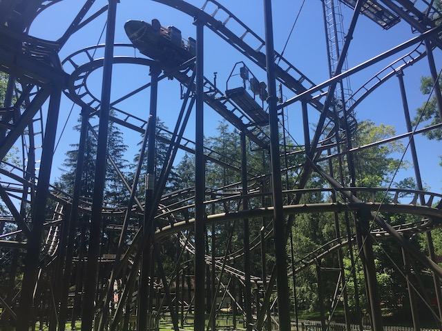
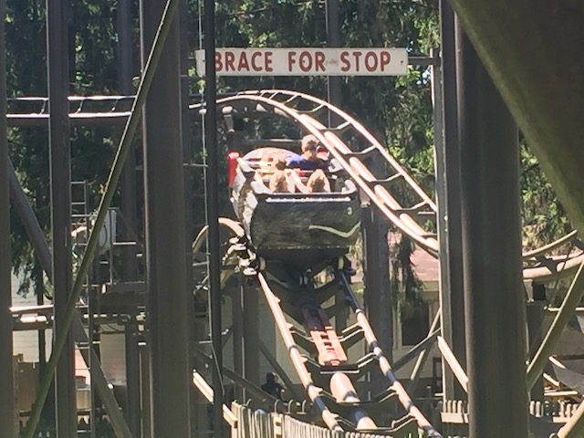
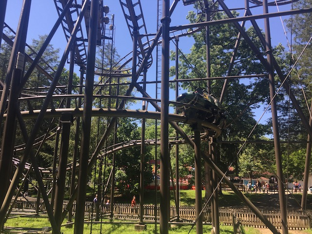
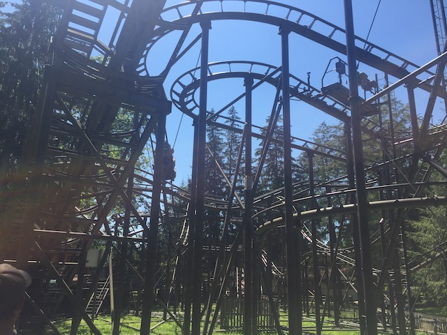
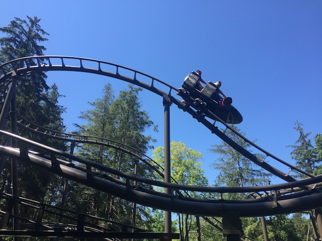
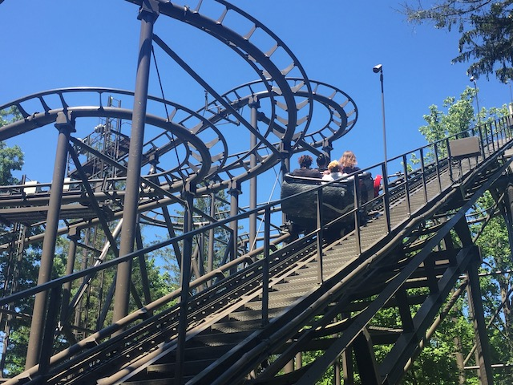
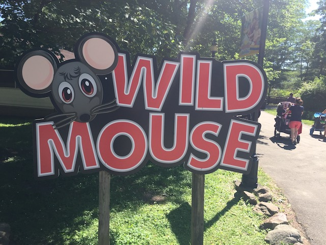

| |
Wild Mouse Review

For this review, we're here at Idlewild and we're reviewing their Wild Mouse. Wild Mouse. Yeah. This does NOT have a special or unique name. However, that doesn't mean that this is an ordinary Wild Mouse. In fact.....I think it's safe to call this one of the most unique and original Wild Mouse coasters out there. I know that may sound weird. I mean.....it's a fucking Wild Mouse. Come on. How special could it be? Actually, very. First of all, it doesn't have the standard Wild Mouse. It's still clearly a Wild Mouse. Both in the elements that it does as well as having the feel of a proper Wild Mouse coaster. This doesn't feel like a Wild Mouse coaster that was made in RCT by a child who isn't familiar with the game and just doing random sh*t like the now-defunct Fuji-Q Mad Mouse (that ride is not missed). It both feels like a proper Wild Mouse, while having its own unique charm. Part of that is the fact that this is the only Wild Mouse coaster that was ever built by Vekoma. And....yeah. Screw the Mack or Maurer Sohne mice coasters. Vekoma is the one who does them best! =) How so? Well, let's hop in the car, pull down the lap bar, and off we go! Go around a turn and up the lifthill. Now.....something is off about this lifthill. Yep. This lifthill is tilted on its side. Why!? I have no idea! But....it just is! Now this doesn't do anything for the ride. You don't feel tilted or anything. It just feels like an ordinary lifthill. But yeah. That's still pretty cool. Eventually, we reach the top, getting a good view of the trees. We go around the first turn and here....it's essentially just a standard Wild Mouse. Go through your average switchbacks just like any other Wild Mouse coaster. If anything, these ones are tamed. Yeah. All those crazy European mice are beating this so far. Go through a couple rounds of switchbacks. Turn and then....DROP!!! We go down the big drop that you normally see on Wild Mouse coasters. Yeah. This ride doesn't have the big turn towards it after the switchbacks. It just jumps straight into it. We then rise back and head around another turn. Hmm. So far, it just seems like a Wild Mouse with some corners cut. But here is where it starts to deviate from the standard Wild Mouse layout. We head down another big drop. And thanks to going under the switchbacks, we get some nice headchoppers. Watch your head! We then rise up another hill, go through a weird sort of turn before....we do another round of switchbacks. Yeah. This is what I mean when I say it both feels like a Wild Mouse and has its own unique identity. Yeah, the spinning mice have a second round of switchbacks. But that's to ensure the ride starts spinning. And if it's not, then I'm bitching about how it's a sh*tty Spinning Mouse. So this is a nice little treat. Go through some more switchbacks. Surprise tiny drop in the middle of them to keep you on your toes! Eventually, we head back out of that and over towards another small drop. Wee! Go around a banked turn. Yep. There's a banked turn on here, just like the Arrow Mild Mice. We head out of that and into some bunny hops. Hey. There's actually a little bit of airtime here. That's fun. We go around another banked turnaround before heading down another small drop. We go up a small hill and pass under a sign. Hmm. It says "BRACE FOR STOP". Hmm. I wonder why.....OH SH*T!!!! Yeah. This ride has one of the most brutal decelerations out of any coaster. It's honestly kind of jarring just how quickly you stop. Especially since it's not like we were going that fast to begin with. Cause....yeah. If something like Kingda Ka decelerated this quickly, it would probably land people in the hospital. So that was the Idlewild Wild Mouse. It's both very much like a standard Wild Mouse while also having its own identity. And I liked that. It gave it its own unique personality and the addition of more drops was appreciated. Plus, that rapid deceleration is....it certainly gives the ride more flavor. Considering you're most likely at Idlewild to credit whore, you're gonna ride this regardless, but it's still a really fun Wild Mouse regardless.
6/10
Location: Idlewild
Opened at Weiner Prater in 1985
Moved to Alton Towers in 1988
Moved to Idlewild in 1993
Built by: Vekoma
Last Ridden: June 24, 2021
Wild Mouse Photos






Home
|